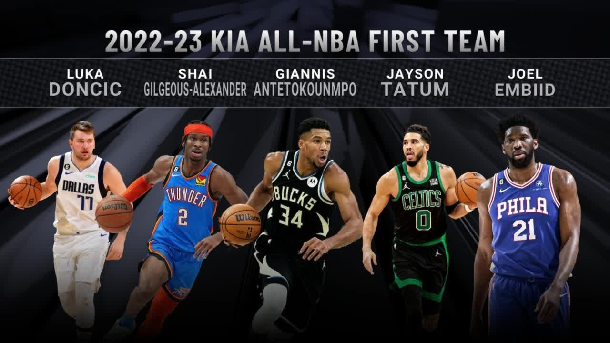

Not too long ago, the NBA announced the 3 All NBA teams and Luka made All NBA First Team for the 4th year in a row. It's a very big accomplishment for such a young player.

On December 27, Luka Doncic made history. He recordered a statline of 60 points, 21 rebounds, and 10 assists over 47 minutes, leading his team to a 126-121 overtime win. It is the first 60+ point, 20+ rebound, 10+ assist game in NBA history.